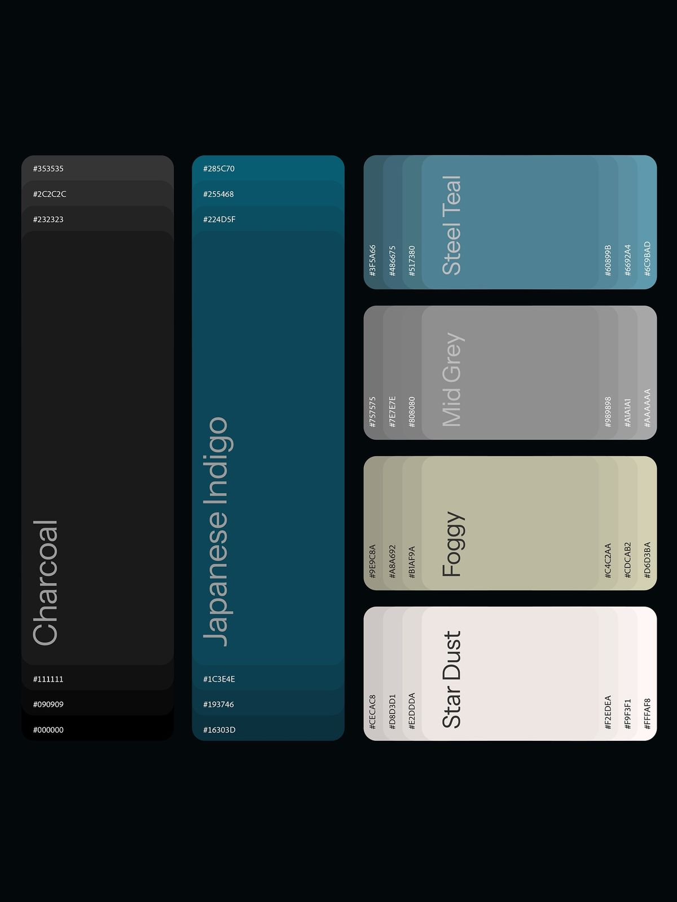
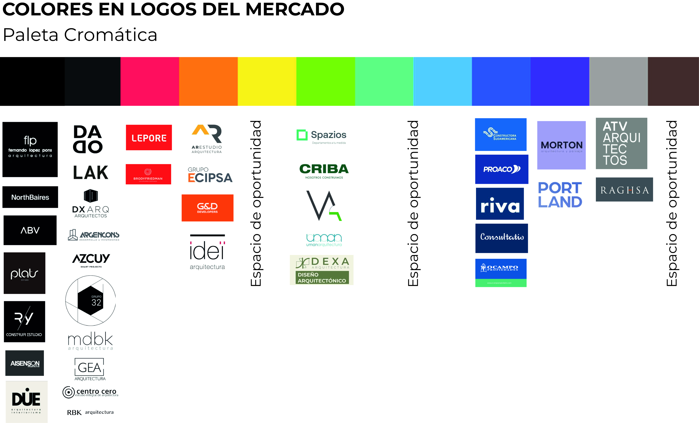
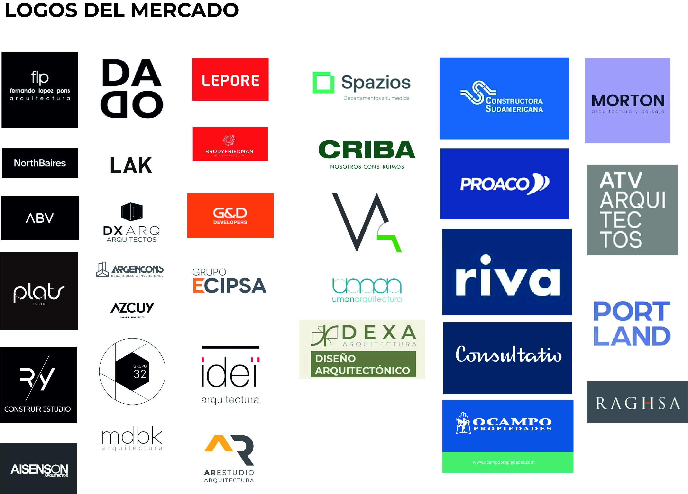

BRANDING
Proyecto NIDÚ es desarrollo inmobiliario enfocado en la creación de espacios residenciales de alta calidad, diseñados para ofrecer una experiencia única de vida. Con una combinación de innovación, sostenibilidad y comodidad, NIDÚ busca transformar la forma en que las personas viven y se relacionan con su entorno. Su desarrollo apunta exclusivamente a la zona de Florida Oeste Vicente López con un concepto de arraigo a este lugar que podemos entender de manera transparente en la descripción de Brief de la empresa.

ANALISIS DEL BRIEF

TABLERO
BRIEF
Origen y significado
El nombre Nidú nace de algo muy personal. El estudio está construido en el mismo terreno donde nací y viví toda mi vida. Ahí estaba la casa de mi mamá. Y cada vez que tuve algún momento difícil, ya sea laboral o personal, siempre volví a ese lugar, a mi habitación, que está a metros de donde hoy tengo la oficina. Ese lugar no es solo un punto físico, es un lugar al que siempre volví para reorganizarme. Y como además el objetivo es desarrollar proyectos en ese mismo barrio, donde crecí, el nombre Nido aparece de forma bastante natural. También es un nombre corto, claro, con un significado inmediato. Es fácil de decir y de usar: "me compré un Nidú", "comprá un Nidú". Pero más allá de eso, lo más importante es el vínculo con el lugar. Nidú llega directammente de Nido, no es un nombre inventado, es una consecuencia directa de mi historia y del lugar donde voy a desarrollar los proyectos.
Qué es Nidú hoy
Hoy Nidú materialmente no existe como empresa consolidada. Es una idea, una semilla que ya empezó a tomar forma con un primer desarrollo. No es el primer desarrollo que hago, ya hubo otros, incluso en el mismo barrio, pero este es el primero que encaro con una intención de continuidad, no como un negocio puntual. Nidú es una apuesta a futuro. Es algo que me entusiasma y que entiendo como el próximo paso de mi estudio. Después de 25 años de ejercicio profesional, creo que el servicio de arquitectura tradicional va a ir cambiando, va a quedar más segmentado o reservado a estudios con marca. La intención es dejar de depender de clientes puntuales y empezar a desarrollar proyectos propios, con una lógica más controlada y más alineada con lo que quiero hacer. Nido es, en ese sentido, el futuro del estudio.
Propósito
El propósito de Nidú está muy vinculado a una búsqueda personal. Tiene que ver con poder canalizar la vocación por la arquitectura en un producto propio, donde las decisiones no estén condicionadas por un cliente, sino por un criterio. La idea es generar un producto diseñado con honestidad, con simpleza, sin ostentación. No desde el exceso, sino desde lo que realmente aporta valor. Pero también hay un objetivo concreto: convertir a Nido en un referente en el barrio donde nací. Florida Oeste es un barrio con muchísimo potencial, pero hoy no está valorado de esa manera. Muchos desarrollos se apoyan únicamente en el precio o en la lógica del negocio. Si bien eso es necesario, no puede ser lo único. El objetivo es elevar la calidad del barrio a través de los proyectos. Demostrar que se puede hacer un producto igual o mejor que en zonas más valoradas como Florida Este. La meta es que, en un plazo de 5 a 6 años, Nidú sea reconocido como un referente de calidad en la zona.
Posicionamiento
El principal diferencial de Nidú está en el diseño, y más específicamente en la planta. Después de muchos años proyectando vivienda multifamiliar, hay una experiencia muy fuerte en la distribución funcional de los departamentos. En los proyectos donde eso se pudo sostener, el resultado es muy claro: plantas resueltas con mucha precisión. Ese es el principal activo y tiene que estar visible. No es algo decorativo, es el núcleo del producto. Además, la intención es trabajar con un nivel de calidad por encima de la media, no solo desde el diseño sino también desde el equipamiento y la resolución constructiva. La idea es entregar un producto lo más completo posible, que no requiera intervenciones posteriores. Nido no busca competir por precio ni por oportunidad. El diferencial está en el criterio, en cómo está pensado el producto y en cómo se resuelve.
Público
El público no es genérico y tampoco es masivo. Hay una primera etapa clara: personas de edad adulta o adulta avanzada que viven en casas en el barrio, que ya no quieren mantenerlas y buscan mudarse a algo más chico, más cómodo, y eventualmente capitalizar esa diferencia. Ese es el primer usuario natural. Después hay un segundo público a construir: gente más joven que hoy no está mirando Florida Oeste como opción. El objetivo es que empiecen a verlo como un lugar válido para vivir, sobre todo por su conectividad y sus características urbanas. Florida Oeste tiene tren, acceso a Panamericana, conexión rápida con Capital y zona norte. Es un barrio de casas bajas, con calles amplias, pero con poca propuesta nueva. Ahí hay una oportunidad. La estrategia no es competir por precio, sino construir valor en el tiempo. Por eso también la construcción de marca está pensada a mediano plazo. En línea con esto, la estrategia comercial incluye mostrar producto terminado. La idea es generar un departamento showroom de muy alto nivel para poder vender desde la experiencia real y no solo desde renders, entendiendo que el público objetivo muchas veces no interpreta planos o imágenes.
Personalidad de marca
Nidú no es una marca llamativa. La idea es que la gente se acerque por la confianza que transmite. No desde un discurso armado, sino desde una historia real. Esa confianza está apoyada en el vínculo con el lugar, en el conocimiento del barrio y en la trayectoria. Es una marca sobria, no estridente. Más emocional que técnica, pero sin caer en lo superficial. Lo emocional tiene que aparecer desde lo real, desde lo vivido, incluso desde lo artístico, no desde un recurso publicitario. Tiene que mantener cierto nivel aspiracional, pero sin exageración. Si Nido fuera una persona, sería yo. No hay una construcción ficticia, hay una continuidad.
Tono de comunicación
La comunicación de Nidú no va a seguir el esquema típico del mercado inmobiliario. No se quiere comunicar desde el precio, ni desde el valor del metro cuadrado, ni desde la lógica de oportunidad. Ese no es el lenguaje. Tampoco se trata de describir superficies o medidas como eje principal. Eso es jugar el mismo juego que todos. La comunicación tiene que ser narrativa. Tiene que contar historias. Historias del barrio, de los lugares, de las experiencias personales vinculadas a cada terreno. Lo técnico tiene que estar, pero en un segundo plano. El primer acercamiento es emocional, el segundo es racional.
NIDÚ Propuesta para Inversores
Nidú es una desarrolladora en construcción. No desde lo formal, sino desde lo real. Surge después de 25 años de ejercicio profesional en arquitectura, con más de 64 obras realizadas, de las cuales alrededor de 40 son edificios de vivienda multifamiliar. No es el primer desarrollo que hago, pero sí es el primero que encaro con una intención de continuidad.
Por qué invertir en Nido
Yo invierto en cada proyecto. Es un negocio compartido. Tengo 25 años de experiencia en diseño, dirección y gestión de edificios y un sistema de control de costos propio comprobado.
El modelo de negocio
El negocio está en la generación de valor. No dependemos solo de comprar bien la tierra, sino de construir eficientemente y controlar los costos.
Momento de entrada y salida
El inversor entra en la compra de la tierra y sale al finalizar el proyecto.
Riesgos y cómo se manejan
El principal riesgo es la estimación del precio de venta. Se trabaja con escenarios conservadores y fuerte control de costos.
Escala y crecimiento
Proyectos de 600 a 1000 m². Dos proyectos por año como escenario ideal.
Tipo de inversor
Uno o dos inversores por proyecto. Relación directa, confianza, participación.
Qué se puede esperar
Transparencia, control, rentabilidad lógica.
La experiencia
Que el inversor participe, vea la obra, y pueda decir que construyó un edificio.
TABLERO
Tendencias de la Competencia

Paleta de Colores: La Saturación del Monocromo y el Azul.
Zona Saturada (Negro, Blanco y Gris): Es la columna más poblada (marcas como NorthBaires, ABV, Aisenson, Azcuy, MDBK). El uso de negro absoluto o gris oscuro busca transmitir máxima sobriedad, lujo premium y solidez estructural.
Zona Corporativa Tradicional (Azules): Otra zona densa (Consultatio, Riva, Proaco, Constructora Sudamericana). El azul se asocia directamente con la confianza, los contratos institucionales, la ingeniería y la trayectoria.
Zonas de Contraste (Rojo, Naranja, Verde): Usados por marcas que buscan desmarcarse mediante la acción o la sustentabilidad (Lepore en rojo vivo; Criba, Spazios en verdes/ecología).
Tipografías y Logotipos

Predominio de la Línea Recta y la Geometría Rígida: La enorme mayoría de los competidores (DADAO, LAK, DX ARQ, ATV) utilizan tipografías sans-serif (palo seco) de trazo grueso, geométrico y ortogonal. Buscan proyectar construcción, vigas, ángulos de 90° y estabilidad.
Abstracción de Iniciales: Muchas identidades se cierran sobre la inicial de su nombre modificada geométricamente (como la "A" de AR Estudio o Azcuy).
El recurso de la Línea Fina (Minimalismo): Marcas como flp, idei o DUE juegan con la extrema delgadez tipográfica para denotar diseño de autor, sofisticación y detalle milimétrico.
Los "Espacios de Oportunidad" en el Gráfico
La imagen marca explícitamente tres grandes vacíos cromáticos en el mercado actual:
Espacio 1 (Amarillo / Oro): Entre el naranja corporativo (G&D) y el verde (Spazios). El amarillo puro es arriesgado en real estate porque puede asociarse a "alerta" o "bajo costo", pero un subtono ocre, arena o dorado mate cambia la narrativa por completo hacia el lujo natural.
Espacio 2 (Cian / Turquesa): Entre el verde claro y el azul Francia. Un tono altamente digital, fresco, pero que a veces carece del peso institucional que requiere la arquitectura pesada.
Espacio 3 (Marrón / Tonos Tierra / Cobre): Al final del espectro, después de los grises de ATV. Aquí está la mina de oro para NIDÚ.
Ruta Orgánica
En lugar de competir en el saturado bloque negro/gris de NorthBaires o el azul de Consultatio, NIDÚ puede adueñarse de los tonos tierra y texturas materiales.
Paleta Cromática sugerida: Base Principal: Un marrón topo profundo o un gris cálido (Warm Grey / Greige) en lugar del negro puro. Esto le da la solidez del concreto pero con la calidez de la tierra.
Acento: Cobre, Terracota o un Ocre Arena (reclamando sutilmente el Espacio de Oportunidad 1). Evoca los materiales nobles de la arquitectura: ladrillo, madera, luz natural, hormigón visto.


Tipografía
Alejarse de la rigidez extrema de ATV o LAK
Utilizar una tipografía sans-serif humanista o geométrica con sutiles terminaciones redondeadas o curvas suaves que remitan a la forma orgánica de un nido, pero estructurada bajo una grilla geométrica perfecta para no perder la sensación de constructora/estudio de arquitectura.
El Isologotipo: Un isotipo que combine la geometría (estructura, planos) con líneas fluidas u orgánicas (naturaleza, refugio).
Minimalismo
Si decidieramos diferenciarnos de la competencia esta podría ser una opción acertada.
Paleta Cromática: Un Verde Seco / Oliva Profundo combinado con detalles en un crudo o blanco roto.
Concepto: Apuntar directo al concepto de arquitectura sustentable, bioarquitectura e integración con el entorno, diferenciándose del verde brillante/tecnológico de Spazios o Criba mediante un tono mucho más maduro, sofisticado y de diseño consciente.
Primeras conclusiones
Despues del análisis de mercado y de lo conversado en la reunión anterior, se puede concluir que NIDÚ tiene la oportunidad de destacar en el mercado con la alternativa minimalista.